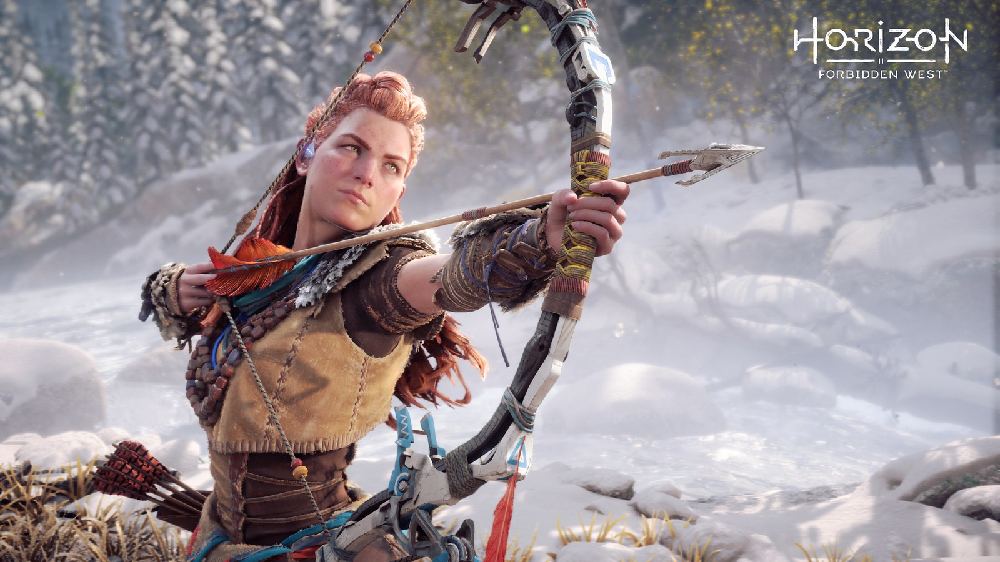

La tierra ya no nos pertenece.
En una era en la cual las máquinas deambulan libres por la tierra y la humanidad ya no es
la especie dominante, una joven cazadora llamada Aloy se embarca en un viaje para descubrir su destino.
En un exuberante mundo postapocalíptico donde la naturaleza ha reclamado las ruinas de una
civilización olvidada, los remanentes de la humanidad viven en primitivas tribus cazadoras-recolectoras.
Su dominio sobre esta nueva tierra salvaje ha sido usurpado por las máquinas, temibles criaturas
mecánicas de origen desconocido.
Conoce a los personajes

Una leyenda en ciernes
Rechazada por su tribu desde que nació, Aloy nunca ha conocido el abrazo de una madre ni la aceptación
de una comunidad. Su única compañía fue Rost, el severo e impasible ermitaño que la crio.
Rost enseñó a Aloy a sobrevivir a cualquier adversidad y a despreciar las comodidades, pero no tenía
respuestas a las preguntas que le preocupaban por encima de todo: ¿quiénes eran sus padres y por qué fue
desterrada?